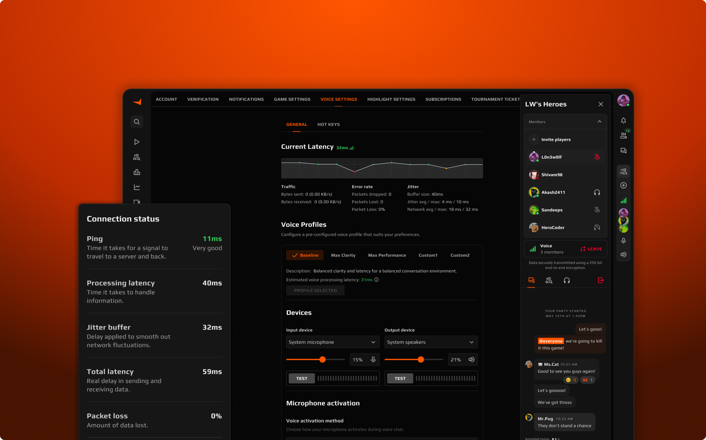
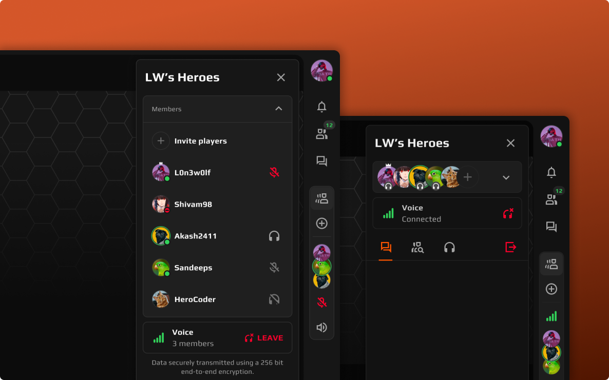
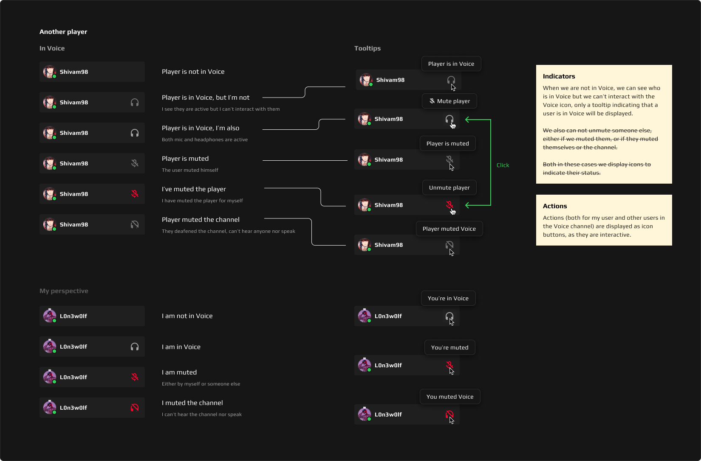
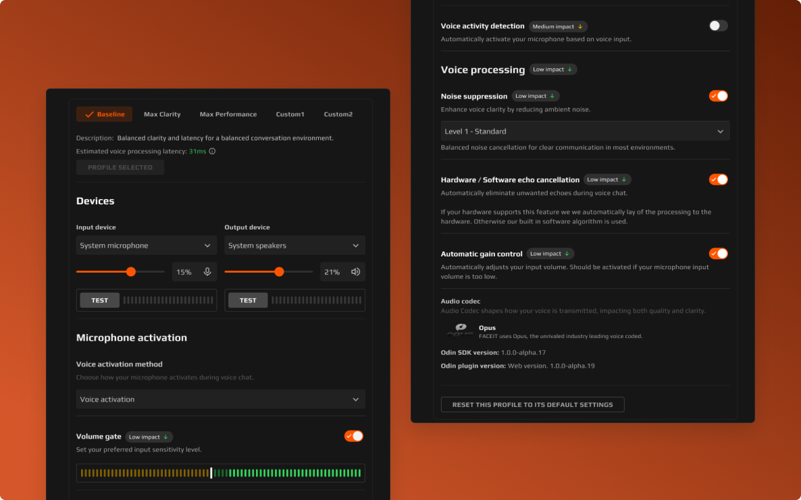
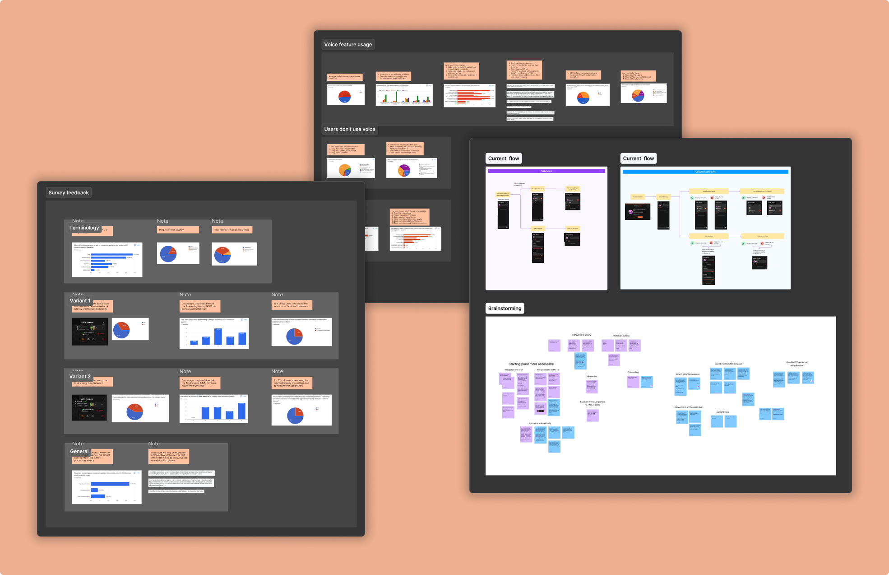
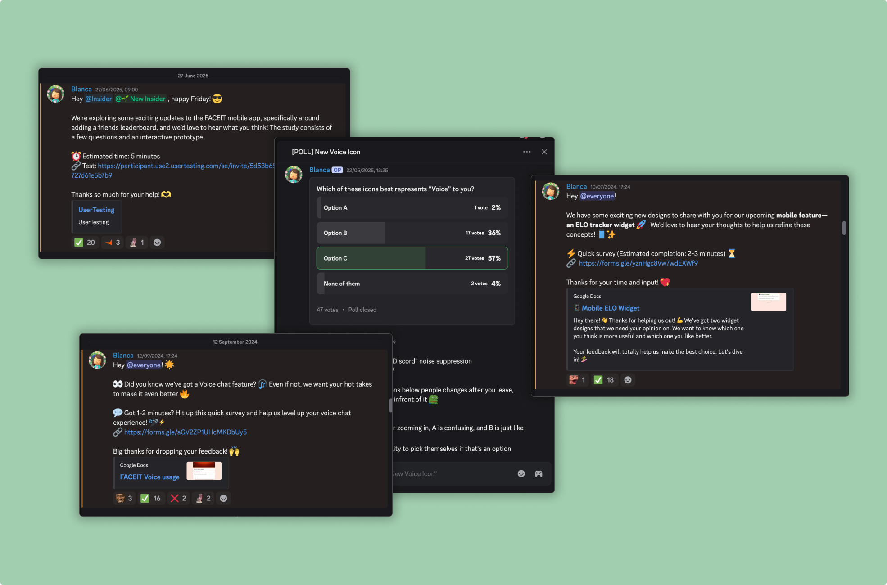

Improving FACEIT Voice and Chat experiences

Overview
During my time on the Voice and Chat teams at FACEIT, I led multiple initiatives to enhance communication features for competitive gaming. This case study highlights key features that improved usability, engagement, and clarity in voice and chat experiences, helping players communicate seamlessly in real-time.
Role: Product Designer — Feature design, user research, prototyping, and testing
Team: Collaboration with Product Managers, Engineers, and Audio Engineering team
Project Background
The Challenge
FACEIT's competitive gaming platform required robust voice and chat solutions to support thousands of players communicating in real-time. The existing solution had scalability issues, users experienced friction, or they didn't even noticed that the communication tools where there. For these reasons, they needed continuous iteration to meet player expectations.
My Role
I was responsible for designing and implementing features that improved the communication experience. This included understanding user behavior, prototyping solutions, running tests, and collaborating with engineers and product managers to drive adoption of voice and chat tools.
Helping players instantly know who’s speaking
Voice chat was invisible
Players often didn't know who was speaking in voice chat, which caused them to miss conversations and discouraged engagement.
Designing awareness without disruption
We focused on increasing awareness of voice activity without forcing participation. The solution had to be visible but not intrusive, integrated directly into the members panel where players already looked for context.

Bringing real-time voice activity into the members panel
- Added real-time indicators showing who was active in voice.
- Included inline audio status icons to show muted, active, or deafened users.
- Subtle pulsing animation highlighted the current speaker's avatar for instant feedback.
From confusion to instant awareness
We improved engagement as players could immediately see who was speaking.

Making connection problems understandable
Players didn’t know what was failing
Players couldn't tell if poor voice quality was caused by their connection, teammates, or FACEIT's system. This led to frustration and avoidance of the voice tool.
Surfacing only what matters
The indicator needed to be simple, intuitive, and non-intrusive, surfacing only the most relevant connection information at a glance.
An actionable connection indicator
- Introduced a real-time connection indicator.
- Players could expand the panel for more detail if desired.
- Provided clear, actionable insights to improve connection quality.
More trust in the voice system
We got a significant reduction in support tickets related to "bad voice quality" and "voice not working" issues.
Modernizing a legacy Chat experience
A chat built by code, not by design
The chat system was old, built directly in code over time, and lacked a coherent design. Messages were hard to follow, interactions felt heavy, and the experience was generally clunky.
Improve clarity without breaking familiarity
I focused on improving readability and navigation without a drastic redesign that added technical implementation, just applying a modernized visual style while keeping familiarity. I prioritized improvements that helped new users understand the chat quickly.
A clean, scalable chat system
- Mapped pain points: messy formatting, inconsistent spacing, unclear interactions.
- Designed a cleaner message layout with better hierarchy.
- Defined reusable chat components (message bubbles, action menus) for consistency and scalability.
Faster, clearer, and more navigable chat
We achieved an easier-to-read, more navigable chat, stablishing a foundation for future chat enhancements.
Designing pro-level controls without complexity
Voice settings were too basic for competitive players
The voice settings offered limited customization, which didn't meet competitive gamers' expectations for fine-tuning audio. As a result, we were not competitive with other platforms in the market that offered more advanced voice controls.
Balancing power and simplicity
We identified a clear opportunity to expand the customization options and making them more intuitive to adjust. Our goals were to give users greater control over their audio setup and match and exceed our competitor capabilities. We also aimed to ensure that the new configurations would be discoverable, easy to test, and accessible even for users less familiar with technical audio concepts.

A flexible, discoverable voice configuration system
- Researched industry patterns to define the real useful audio controls.
- Introduced features like device configuration, audio testing, sensitivity adjustment, push-to-talk, noise suppression, and latency indicators.
- Added a quick-setup workflow for first-time users.
- Grouped settings logically with short descriptions for clarity.
- Tested designs with the Discord community to refine labels and usability.
Complexity only matters when it solves a real need
My key takeaway from this project was that just because we can technically build a feature doesn't mean we should. The audio engineering team was excited about adding advanced, cutting-edge controls that offered highly fine-tuned audio quality. However after gathering some user feedback, it showed that most players weren't aiming for perfect, professional-level sound, they simply wanted to configure their audio quickly and start playing.
This taught me the importance of balancing technical ambition with real user needs, and ensuring that complexity is added only when it delivers meaningful value.
Other Projects
Insights Dashboard
Designed a data-driven dashboard to help users understand and improve overall gaming experience quality. Focused on simplifying metrics, creating visual clarity, and guiding users through actionable recommendations.
Friend List Improvements
Explored ways to help players see which friends were available or looking to play. I talked with our community to understand how players discover friends, then reorganized the list to surface the most relevant friends in real time, making social interactions more spontaneous and meaningful.
Both projects are under NDA, so only high-level process details are shown.
Design Process
Documentation
I collaborated on the creation of PRDs with the Product Manager to define problems, success criteria, and measurement. Documentation evolved alongside discovery and testing.
Research & Discovery
- Conducted user tests, A/B tests, and surveys (Discord, Typeform, Maze).
- Analyzed session behavior using Mouseflow and Mixpanel dashboards.
- Performed competitor analysis to understand interaction patterns in similar platforms.

Ideation & Prototyping
- Mapped problems and pain points using User story mapping and "How Might We" statements.
- Facilitated collaborative ideation sessions with product and engineering teams.
- Created wireframes and interactive prototypes in Figma using our existing design system.
Testing & Iteration
- Validated prototypes with users through Discord feedback, Maze unmoderated tests, and targeted surveys.
- Synthesized results and recommended next steps to the team.
- Iterated designs based on qualitative and quantitative insights, balancing user needs and technical feasibility.

🔍 Key Takeaways
During my time working on Voice and Chat I learned that small and thoughtful improvements can significantly impact user experience without requiring full redesigns.
Also that advanced features only add value when they solve real user problems, we shouldn't add features because we can, it can add an unnecesary complexity that afect the users experience.